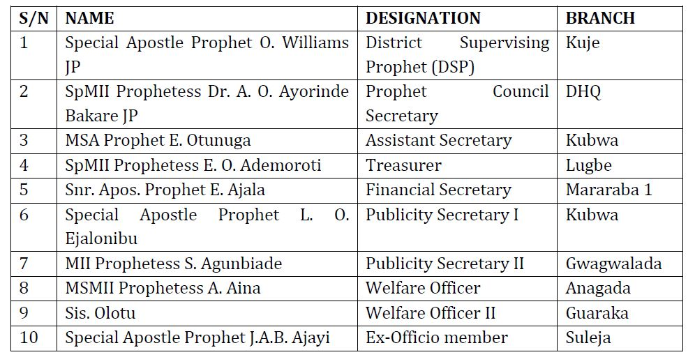
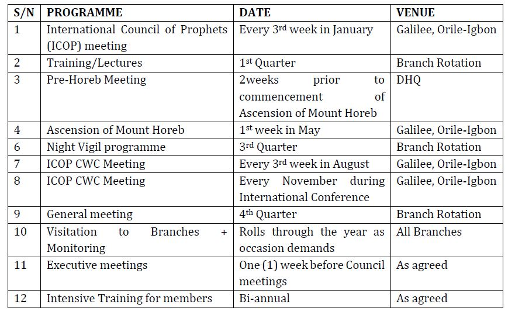

Council Of Prophets
Introduction
A Prophet is a ministry gift given by God to the Church (Ephesians 4:11). No one can make himself a Prophet or call himself to be a Prophet. God alone calls and set Prophets in the Church. However, some people get off-course doctrinally by thinking that a Prophet’s only function is to prophesy to people. That is only a small part of the ministry.
A Prophet’s primary purpose and main ministry is to Preach or Teach the Word, or to be both because that matures the saints and equips them for service (Ephesians 4:12-13). Prophesying is not the main thrust of the Prophet’s ministry. Even as a Prophet, Jesus’ ministry consisted, first of teaching; second, preaching; and third, healing.
A Prophet is to edify and build up the Body of Christ. People are in danger when they go around trying to regulate other people’s lives from the Prophet’s office. A Prophet who bases his ministry on personal prophecy instead of on preaching or teaching the Word will get into error and wreak havoc in the Body of Christ.
A Prophet prepares himself in the Word and more by praying and seeking God. God cannot pull the Word out of a Prophet’s spirit if that Prophet has not spent time putting the Word into his spirit. Music inspired by the Holy Spirit can often enhance the Prophetic anointing.
Another element of the Prophetic ministry is that the Prophet is a Seer. A Seer is one who sees into the realm of the spirit through the gift of discerning of spirits.
People who try to direct other people’s lives through the Office of the Prophet are nothing more than fortune-tellers. Many people do not have enough sense to know that. The true Prophet does not try to run people’s lives through that office. The Prophetic office is only in demonstration by the anointing of the Spirit of God, as He wills.
Responsibilities of the Prophets
Minister to people in unique approach as led by the Spirit of God.
Swing the pendulum (rebuke & chastise) when necessary.
Have a singleness of purpose – for people to attain unto the full measure of the stature of Christ.
Teach and build people spiritually in all manner worthy of a Christian.
Nuture and mentor people to identify their God-given gifts and use same to the glory of God.
Ability to overcome challenges as watchmen, especially those facing the church because of their importance and relevance in contemporary time.
To lead war against principalities and powers, forces of darkness and wickedness in high places.
To continually live a life that glorifies God.
HISTORICAL BACKGROUND
The Council- Dakibiyu District Council of Prophets was pre-birthed by Visioners and Dreamers Group which transformed to Daniel Band in 1997. The journey started with the coming together of visioners, dreamers and other persons with the gifts of the Holy Spirit. The group was superintended over by the following people:
Ordination
Prophetic Ordination started in 1999 when the 1st set of Prophetesses came out of Daniel Band with the ordination of 3 people on 6 May 1999. They were:Transition to Dakibiyu District Council of Prophets
The District witnessed rapid growth and increase in membership and became a District in 2006. This brought about the creation of Dakibiyu Council of Prophets with Acting District Supervising Prophet (DSP) and Secretary. They were:Strength/Administration
Counting numbers since the commencement of Prophetic ordination in the District in 1999, the District has presented sixty-five (65) persons for ordination. Presently, there are fifty-five (55) ordained in the District. We have 18 Prophets and 37 Prophetesses with several visioners, dreamers and recorders. The Council communicates with her members via whatsapp group platform “Dakibiyu Dist Daniel Band, CoProphets Dakibiyu Abuja and Exco Dakibiu CoProphets;” announcements in church and SMS as occasion demands.CURRENT EXECUTIVES AND PORTFOLIO
PROGRAMMES
CONTACT/EMAIL ADDRESS
District Supervising Prophet: 08033155989
Prophets’ Council Secretary: 08027054717, 08168344712 (whatsapp)
E-mail Address: dakibiyucoprophets@yahoo.com